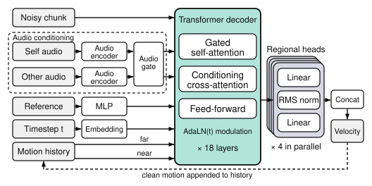
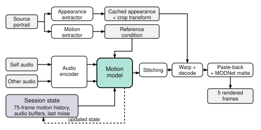
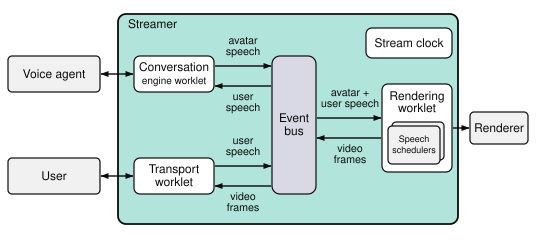

Self-Hostable Stack for Real-Time Interactive Avatars
Avaturn · 2026 · * Equal contribution
We introduce AVTR-1, a self-hostable inference and serving stack for real-time conversations with an interactive avatar. A 153M-parameter flow-matching Transformer autoregressively generates a compact motion representation in five-frame chunks from separate audio streams for the two participants, independently of appearance rendering. We adapt an audio encoder for streaming by self-distillation, matching its short-chunk features to the full-context features used during training. Region-wise classifier-free guidance enables fine-grained control over the generated motion. The serving runtime connects chunked motion generation to an external conversation engine, synchronizes its speech with video, continues generation while the avatar listens, and handles interruptions. AVTR-1 performs competitively with state-of-the-art talking-head models while supporting full-duplex interaction. The complete runtime generates and renders each 200 ms video chunk in 84 ms on an NVIDIA L40 and 166 ms on an NVIDIA RTX 4060 Ti. To test whether generated listening motion contains predictive information from the paired speaker's speech, we introduce the Reference-Based Directed Granger Gain. AVTR-1 obtains a positive gain with a 95% bootstrap interval above zero, while the intervals for the non-dyadic baselines include zero. To our knowledge, this is the first public release to provide the complete self-hostable stack required to run a live, interactive session with an avatar. We release the model weights, inference code, and serving backend under component-specific licenses.
Overview of the AVTR-1 motion model. An 18-layer Transformer decoder denoises a five-frame motion chunk, conditioned on two gated audio streams, a static reference, the diffusion timestep through AdaLN modulation, and the past motion split into near and far paths. Four parallel region-wise heads produce the 42-dimensional velocity, and the clean chunk is appended to the motion history for the next step.

Overview of AVTR-1 inference. Source registration caches the LivePortrait appearance and constructs the reference condition. Each request encodes the two audio streams, predicts a five-frame motion chunk from the session state, renders the frames, and returns the updated state for the next request.

The streamer's worklet and event-bus architecture. A transport, a conversation engine, and a rendering worklet communicate only through a central event bus. The conversation engine worklet adapts a voice agent, the rendering worklet holds one speech scheduler per audio stream, avatar and user, and drives the renderer, returning fused audio-video frames. Worklets read the stream clock directly.

Per-chunk latency and real-time factor across GPUs, measured offline on one five-frame (200 ms) chunk.
| GPU | Latency per chunk | Real-time factor |
|---|---|---|
| NVIDIA L40 | 84 ms | 2.4× |
| NVIDIA A100 | 91 ms | 2.2× |
| NVIDIA RTX 4060 Ti | 166 ms | 1.2× |
| NVIDIA RTX 3070 | 181 ms | 1.1× |
| NVIDIA L4 | 202 ms | 0.99× |
| NVIDIA RTX 3060 Ti | 206 ms | 0.97× |
| NVIDIA RTX 4060 | 232 ms | 0.86× |
★ = native dyadic audio conditioning. For AvatarForcing*, we extend the hardcoded RoPE range and remove the manual generation-length limit so that it can process the full conversations.
@misc{avtr1_2026,
title = {AVTR-1},
author = {Tikhonova, Anastasia and Kravtsov, Artem and Ziganshin, Dmitrii
and Burkov, Egor and Balitskiy, Gleb and Sherman, Sergei
and Lebedev, Vadim and Poletaev, Vsevolod},
year = {2026},
url = {https://avaturn.live}
}
We thank Vadim Lebedev for his contributions to analyzing and adapting the motion representation and rendering components used in AVTR-1.